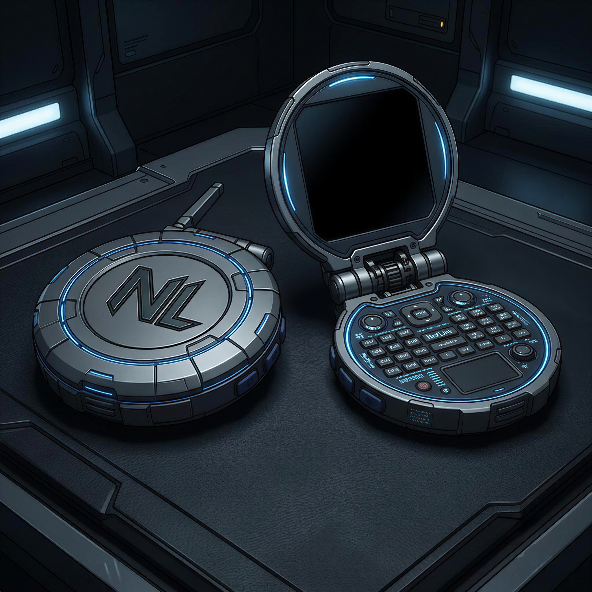
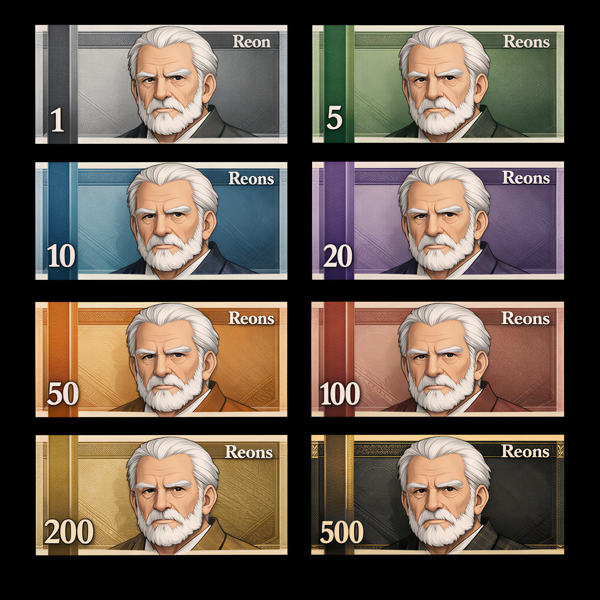

História: Após a missão em que conheceu Igneus, Drake, Gale e Selena e juntos formaram os Pulsebreakers, Aria desenvolveu o NeXLink como um meio de manter a equipe conectada em qualquer situação. Com o tempo, o NeXLink deixou de ser apenas uma ferramenta e passou a representar confiança, tornando-se um símbolo de aliança entre aqueles que lutam pelo mesmo objetivo. Desde então, todo aliado considerado digno, sejam heróis independentes, equipes ou organizações, recebe um NeXLink, permitindo que forças espalhadas pelo mundo se unam rapidamente sempre que uma emergência surgir.

História: No ano de 2003, após décadas marcadas por crises financeiras globais, inflação descontrolada e guerras comerciais, líderes de mais de 180 nações se reuniram na Cúpula Global de Tóquio para criar uma moeda única, estável e acessível para toda a população mundial. Dessa decisão nasceu o Reon, projetado para funcionar como a base de um sistema financeiro global unificado. O Reon passou a operar tanto em formato físico, como notas, cartões e dispositivos portáteis, quanto em transações digitais instantâneas altamente seguras, permitindo que qualquer pessoa enviasse ou recebesse dinheiro em segundos, a qualquer hora e em qualquer lugar do mundo. A transição ocorreu rapidamente, e entre 2003 e 2006 todas as moedas tradicionais, como dólar, euro, real, iene e libra, foram oficialmente descontinuadas, tornando o Reon a única forma de pagamento aceita globalmente, desde pequenas compras do cotidiano até grandes acordos internacionais. Os valores monetários do Reon são representados pelo padrão internacional R₦, utilizado antes dos números para indicar quantias financeiras, como em R₦ 3,00, R₦ 50,00 ou R₦ 10.000,00.